Summary
| Average blind score (1–10) | No plugin | Anthropic plugins | Fleet plugin |
|---|---|---|---|
| Overall design quality | 6.0 | 7.0 | 8.0 |
| Distinctive and fitted to this subject, rather than a generic template that could belong to any product | 4.0 | 7.7 | 9.0 |
| Hierarchy and layout | 6.3 | 7.7 | 7.0 |
| Typography | 6.3 | 7.0 | 8.0 |
| Color | 5.7 | 7.3 | 8.0 |
| Interaction and states | 7.3 | 7.0 | 9.0 |
| Motion | 5.3 | 7.7 | 8.0 |
| Copy | 6.7 | 7.7 | 8.7 |
| Platform fit | 6.7 | 6.0 | 7.3 |
| Guideline words | Files read | Tokens | Time | Requirements met | Average rank | |
|---|---|---|---|---|---|---|
| No plugin | 0 | 0.0 | 82,929 | 241s | 25/28 | 3.0 |
| Anthropic plugins | 5,405 | 4.0 | 90,208 | 265s | 26/28 | 2.0 |
| Fleet plugin | 52,041 | 7.3 | 124,319 | 429s | 27/28 | 1.0 |
Results
- Fleet ranked first on all three briefs. Overall 8.0 against 7.0 for Anthropic and 6.0 with no plugin. In round 2 Fleet and Anthropic tied at 7.33.
- Fit moved most: Fleet 9.0, up from 7.0, and now above Anthropic's 7.7 (8.7 in round 2). Every Fleet build borrowed a form from the subject's world and put it first: an accountant's ledger with a cents column and a double-underlined total, a library borrower's card with return stamps, and a depot board of vehicle tags.
- Fleet kept its lead on states and copy (9, 9, 9 on states), and showed no generic tells in any build. The no-plugin builds showed two to seven tells each.
- Anthropic's arm did not change between rounds but moved from 7.33 to 7.0 overall, so a shift of about half a point is within run-to-run noise. Fleet's gain of 0.67 overall and 2.0 on fit is larger than that, but one run per side is still a small sample.
Cost
- Fleet is cheaper than round 2 but still above Anthropic: 124k tokens per run against 142k before, and 90k for Anthropic. Files read fell from 16.7 to 7.3.
- The lookup instruction was only partly followed. Builders still opened four to six craft references (typography, interaction, layout and others) before or during the build, and two read
evidence.md. The homepage run also opened the landing-page skill, because it found it by listing the folder.
What still needs fixing
- Prototype controls in product chrome, again. The Fleet web app put a "Prototype" strip with "Fail the next save" at the top. The new rule says to keep demo controls visibly outside the design; the builder believed a dashed strip qualified. The rule needs to say where: off the product's screen entirely, or not at all.
- The homepage hero still leaves the card below the fold at desktop width, the same composition fault as round 2, though the page now leads with a real idea.
- Phone: tap targets and a floating pill. "See all" and "Done" were about 36pt, and a floating "Add expense" pill covered a link and reads as an Android pattern on iOS.
Ledger: iOS budgeting app mock
| No plugin | Anthropic plugins | Fleet plugin | |
|---|---|---|---|
| Grader's rank | 3 | 2 | 1 |
| Overall design quality | 6 | 8 | 8 |
| Distinctive and fitted to this subject, rather than a generic template that could belong to any product | 4 | 7 | 9 |
| Hierarchy and layout | 7 | 9 | 7 |
| Typography | 7 | 8 | 8 |
| Color | 6 | 8 | 8 |
| Interaction and states | 8 | 8 | 9 |
| Motion | 7 | 7 | 8 |
| Copy | 7 | 8 | 9 |
| Platform fit | 6 | 8 | 6 |
No plugin
Strongest: The most complete interaction model: push navigation into categories, a draggable detail sheet, a shaking inline amount error, toasts that name the amount and category, and a Settings tab that works.
Fix first: Hide the toast fully at rest (translateY well above the screen or opacity 0) so 'Expense added' doesn't sit on the Dynamic Island on launch, then replace the emoji icons and gradient hero, which read as a generic finance template.
Anthropic plugins
Strongest: Hierarchy: one huge rounded 'left to spend' figure, then a single bold stacked ribbon with a Today pace marker that answers 'am I on track?' at a glance, then budgets ranked by how close they are to the limit.
Fix first: Fix the Dynamic Island, which the status bar's gradient paints over and turns into a grey smear (give .island a z-index above .status), and show the empty Gifts category on Home instead of hiding it in Budgets.
Fleet plugin
Strongest: The accountant's ledger is the concept: a red margin rule, cents in their own column and a double underline under the total, backed by plain, specific copy like '$51.30 a day keeps you on budget for the 25 days left in November.'
Fix first: Move the floating 'Add expense' pill (into the tab bar or a toolbar button), because it covers the Recent header's 'See all' on the default screen and is an Android pattern on iOS.
1280px
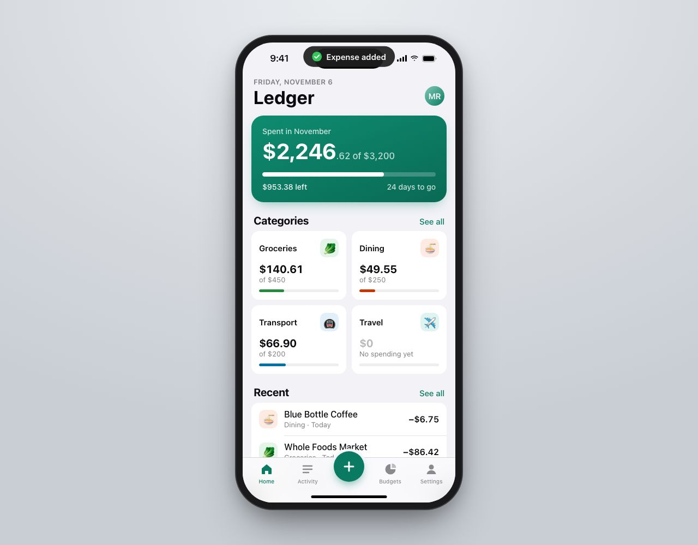
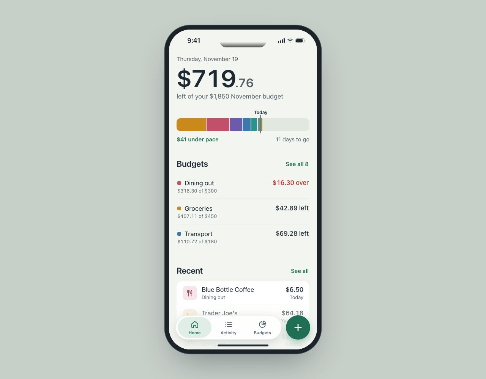
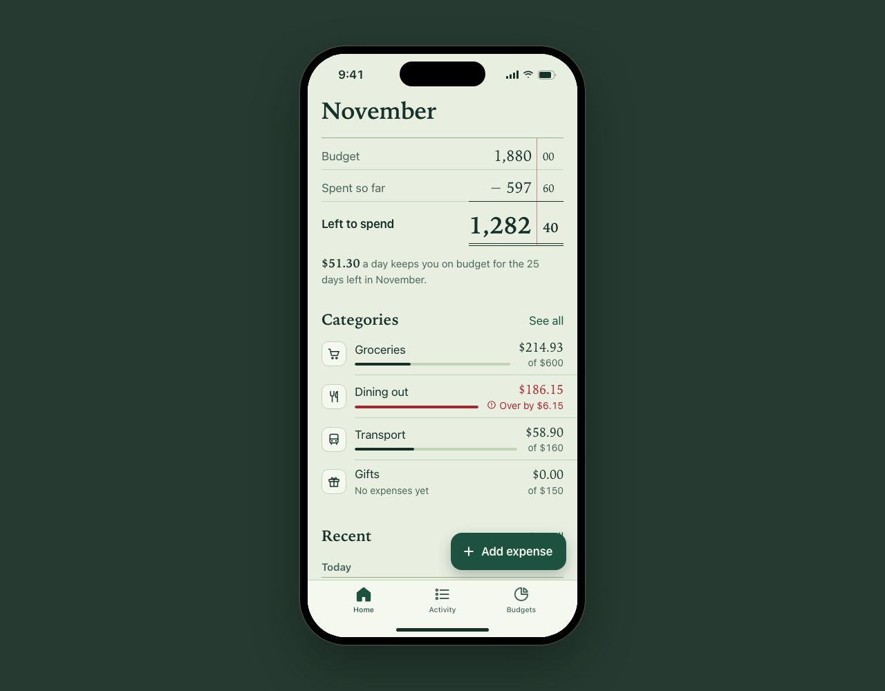
Brief requirements
| No plugin | Anthropic plugins | Fleet plugin | |
|---|---|---|---|
| Home shows month spending vs budget, category summaries and recent transactions | ✓ Green hero card '$2,246.62 of $3,200' with meter and pace tick, 2x2 category cards, Recent list of 5 rows. | ✓ '$719.76 left of your $1,850 November budget', stacked category ribbon with a Today pace marker and '$41 under pace', top 3 budgets, Recent group. | ✓ Ledger table Budget 1,880.00 minus Spent 597.60 = Left to spend 1,282.40 (double rule), four category rows with meters, Recent grouped under 'Today'. |
| Tapping a transaction opens a bottom sheet that can be dismissed | ✓ openSheet() slides .sheet up from bottom; dismissed by Done, scrim tap, Escape or dragging the grabber past 110px. | ✓ openDetail() raises a bottom sheet with a grabber; closes via Done, backdrop, Escape or drag >110px, with a focus trap. | ✓ openDetail() opens a 30px-radius bottom sheet; closes via Done, scrim, Escape, or a velocity-aware drag with rubber-banding upward. |
| Add expense has amount, category, date and optional note | ✓ New Expense modal: large $ amount input, 8 category chips (radiogroup), Date input, Note textarea with 'Optional' placeholder. | ✓ Add expense sheet: centered auto-sizing amount, 8 icon chips, Date row, Note row with 'Optional' placeholder. | ✓ Cover form has Amount, Category radio grid (8), Date (max today) and Note labelled 'Optional'. |
| Submitting with no amount shows an inline error that says how to fix it | ✓ Empty submit shows red inline 'Enter an amount to save this expense' with icon under the amount, plus shake and aria-invalid. | ✓ Empty submit sets role=alert 'Enter the amount you spent.' in red under a red underline; zero gets 'Enter an amount greater than $0.' | ✓ parseAmount('') returns 'Enter how much you spent.', shown inline in red with alert icon; malformed input gets 'Enter the amount as a number, like 12.50.' |
| A category with no transactions shows an empty state with a next action | ✓ Travel card on Home shows '$0 / No spending yet'; tapping pushes a category view with empty card and 'Add travel expense' button that preselects Travel. | ✓ Gifts on Budgets shows 'Nothing spent yet'; its sheet says 'No gifts expenses yet' with 'Your $150 budget is untouched' and an 'Add gifts expense' button preset | ✓ Gifts row on Home reads 'No expenses yet'; its pushed view says 'Nothing spent on gifts in November yet.' with an 'Add a gift expense' button preset to Gifts. |
| Tab bar switches tabs | ✓ switchTab() toggles Home, Activity, Budgets, Settings views and aria-selected; all four tabs have content. | ✓ selectTab() swaps Home, Activity and Budgets panels, with arrow-key roving tabindex. | ✓ setTab() toggles Home, Activity (with search) and Budgets, updating aria-current. |
| Money uses fixed-width digits | ✓ font-variant-numeric: tabular-nums on .hero .amount, .cat-card .spent, .row .amt, .detail-top .amount and the amount input. | ✓ tabular-nums on .hero-amt, .tx-amt, .brow-status, .brow-meta, .d-amt and the amount input. | ✓ Serif figures use tabular-nums everywhere (.dol, .cts, .amt, .of, .d-amt, amount input), and cents sit in their own column. |
| Status bar, home indicator and safe areas are respected | ✗ Safe-area padding (54px top, 83px tab bar, home indicator) is right, but the toast rests at translate(-50%,-140%) from top:60px, so 'Expense added' sits over th | ✓ Content padded 58/136px, floating tab bar 26px above the home indicator, fade under the tab bar. However the status bar's gradient (z-index 30) paints over the | ✓ Opaque status bar strip at 54px, views padded 54/176px, 83px tab bar, home indicator drawn above content. |
| Tap targets are at least 44pt | ✗ 'See all' .link buttons have no padding (~20px tall); sheet 'Done' and back button are ~36-38px. | ✓ .link has min-height 44px, tabs fill a 64px capsule, add button 64px, chips 76px, rows 62px, buttons 54px. | ✗ Tabs 48px and buttons 50px, but .link-btn 'See all'/'Done' are ~36px tall and the floating 'Add expense' button covers the Recent 'See all' in the default view. |
Measured on the rendered page
| No plugin | Anthropic plugins | Fleet plugin | |
|---|---|---|---|
| Sideways overflow | 1280px: 0px | 1280px: 0px | 1280px: 0px |
| Smallest text | 10px | 11px | 10.5px |
| Light weight under 18px | 0 | 0 | 0 |
| Title Case labels | 🍜 Blue Bottle Coffee Dining · Today −$6.75, 💡 Con Edison Utilities · Yesterday −$112.08, 🚇 Lyft Transport · Yesterday −$18.30, 🥬 Trader Joe’s Groceries · Wed, Nov 4 −$54.19, 🥬 Whole Foods Market Groceries · Today −$86.42 | Lyft Transport $18.62 Sunday, Trader Joe's Groceries $64.18 Yesterday, Uniqlo Shopping $49.90 Monday | Lyft Transport $18.90, Trader Joe’s Groceries $68.42, Walgreens Health $23.17 |
| Uppercase tracked labels / arrows / middle dots | 3 / 0 / 5 | 0 / 0 / 0 | 0 / 0 / 0 |
| Hover rules not gated to hover devices | 0 of 0 | 0 of 0 | 0 of 0 |
| Longest animation | 500ms (7 over 300ms) | 380ms (3 over 300ms) | 400ms (2 over 300ms) |
| ease-in / transition: all / layout props animated | 0 / 0 / width | 0 / 0 / none | 0 / 0 / none |
| Reduced motion / fixed-width digits | yes / yes | yes / yes | yes / yes |
| Press scales | .93, .97, .98 | .95 | .97 |
| File size | 43 KB | 38 KB | 47 KB |
Generic AI tells the grader saw
| No plugin | Identical rounded cards with one radius and the same soft gray shadow, Decorative gradient washes or glows, Tracked uppercase eyebrow labels over headings, Metadata joined with middle dots |
|---|---|
| Anthropic plugins | none |
| Fleet plugin | none |
Runs
No plugin
Files read
None
Prompt
Design a high-fidelity HTML mock of the iOS app for Ledger, a personal budgeting app. Build one self-contained `<workspace>/index.html` (inline CSS and JavaScript, no external dependencies) that shows the app inside an iPhone-sized frame, 390 × 844 points, centered on the page. Include: - A Home tab: this month's spending against the monthly budget, a few category summaries, and recent transactions. - Tapping a transaction opens a detail sheet from the bottom; it can be dismissed. - An Add expense screen reached from a prominent add button, with amount, category, date and an optional note. Submitting with no amount shows a validation error. - A category that has no transactions yet. - A tab bar, with working tab switches. Use realistic content, and make the interactions work. Work only inside <workspace>: read and write files there and nowhere else. Don't invoke skills, plugins or slash commands, and don't start servers, browsers or other agents. When you finish, reply with a short summary of what you made, followed by a list of every file you read.
Anthropic plugins
Files read
frontend-design/SKILL.md ux-copy/SKILL.md accessibility-review/SKILL.md
Prompt
Design a high-fidelity HTML mock of the iOS app for Ledger, a personal budgeting app. Build one self-contained `<workspace>/index.html` (inline CSS and JavaScript, no external dependencies) that shows the app inside an iPhone-sized frame, 390 × 844 points, centered on the page. Include: - A Home tab: this month's spending against the monthly budget, a few category summaries, and recent transactions. - Tapping a transaction opens a detail sheet from the bottom; it can be dismissed. - An Add expense screen reached from a prominent add button, with amount, category, date and an optional note. Submitting with no amount shows a validation error. - A category that has no transactions yet. - A tab bar, with working tab switches. Use realistic content, and make the interactions work. The team's design guidelines are in <workspace>/design-guidelines. Start with design-guidelines/frontend-design/SKILL.md and follow it, reading the other guides it points to, or that apply, as you need them. Work only inside <workspace>: read and write files there and nowhere else. Don't invoke skills, plugins or slash commands, and don't start servers, browsers or other agents. When you finish, reply with a short summary of what you made, followed by a list of every file you read.
Fleet plugin
Files read
skills/design/SKILL.md skills/design/references/platforms.md skills/design/references/interaction.md skills/design/references/motion.md skills/design/references/icons.md skills/design/references/typography.md references/craft-floor.md
Prompt
Design a high-fidelity HTML mock of the iOS app for Ledger, a personal budgeting app. Build one self-contained `<workspace>/index.html` (inline CSS and JavaScript, no external dependencies) that shows the app inside an iPhone-sized frame, 390 × 844 points, centered on the page. Include: - A Home tab: this month's spending against the monthly budget, a few category summaries, and recent transactions. - Tapping a transaction opens a detail sheet from the bottom; it can be dismissed. - An Add expense screen reached from a prominent add button, with amount, category, date and an optional note. Submitting with no amount shows a validation error. - A category that has no transactions yet. - A tab bar, with working tab switches. Use realistic content, and make the interactions work. The team's design guidelines are in <workspace>/design-guidelines. Start with design-guidelines/skills/design/SKILL.md and follow it, reading the other guides it points to, or that apply, as you need them. Work only inside <workspace>: read and write files there and nowhere else. Don't invoke skills, plugins or slash commands, and don't start servers, browsers or other agents. When you finish, reply with a short summary of what you made, followed by a list of every file you read.
Grader notes
I judged each screenshot first, then read the code for the sheet, the add form and its errors, empty categories and the other tabs. All three meet the brief's functional requirements; the differences are in craft and identity. B and C are close. B wins on fit and copy: the ledger arithmetic, cents column and double rule make it belong to a product called Ledger, and it designs more states (over-budget flags, category-required error, malformed-amount error, search no-results with Clear search). It loses points on platform for the Material-style extended button, which visibly covers 'See all'. C is the cleanest iOS build (iOS 26 floating tab bar plus action button, 44pt links, focus trap) with the strongest single-glance hierarchy, but its identity is more generic, the empty category is buried in Budgets, and the Dynamic Island renders broken in the default shot. A is competent and the most fully wired, but it reads as a stock finance template (emoji tiles, gradient hero card, uppercase eyebrow, middle-dot metadata, identical 14px cards) and ships a visible bug: the toast covering the island at rest. B's serif on sage paper brushes against the cream-serif tell but avoids cream and terracotta, so I didn't count it.
Fernhill Seed Library: marketing homepage
| No plugin | Anthropic plugins | Fleet plugin | |
|---|---|---|---|
| Grader's rank | 3 | 2 | 1 |
| Overall design quality | 6 | 6 | 8 |
| Distinctive and fitted to this subject, rather than a generic template that could belong to any product | 4 | 8 | 9 |
| Hierarchy and layout | 6 | 7 | 7 |
| Typography | 6 | 7 | 8 |
| Color | 5 | 7 | 8 |
| Interaction and states | 7 | 5 | 9 |
| Motion | 3 | 9 | 9 |
| Copy | 6 | 7 | 9 |
| Platform fit | 7 | 4 | 8 |
No plugin
Strongest: The illustrated seed packets and per-crop SVG art give the catalog warmth, and its mechanics are solid: a working mobile menu with Escape and focus return, live branch status and an empty state for filters.
Fix first: Remove the scroll-reveal on every section. Content should render visible by default, and in both captures half the page, including the sign-up form and branches, is blank.
Anthropic plugins
Strongest: The pocket-card hero ('Packet 0417', two past borrowers, 'Your name here' linking to sign-up) shows the lending cycle as one packet's history, and the swatch-topped seed packets carry that idea into the catalog.
Fix first: Fix the phone overflow in the hero (set min-width:0 on the grid children and let the loan table shrink or stamps wrap) so nothing is clipped at 390px.
Fleet plugin
Strongest: The borrower's-card ledger and the planting calendar turn the borrow-and-return cycle into library artifacts that only this subject could produce, and the catalog's call numbers, Latin names and save-difficulty legend continue that idea.
Fix first: The desktop hero leaves the top-right half empty and pushes the borrower's card below the fold. Put the card beside the headline at wide widths so the hero reads as one composition.
1440px
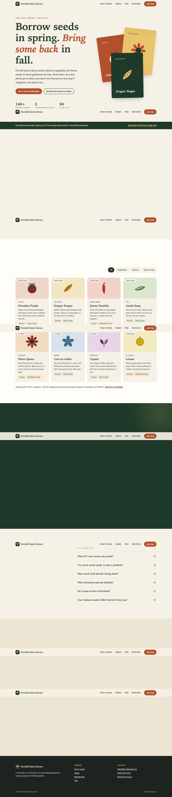
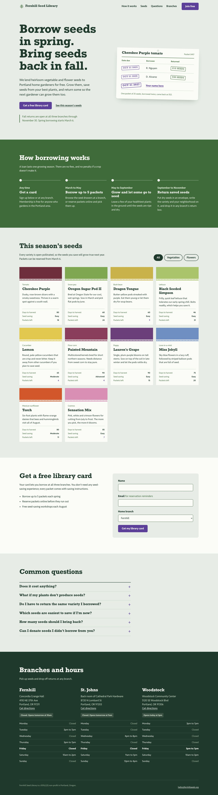
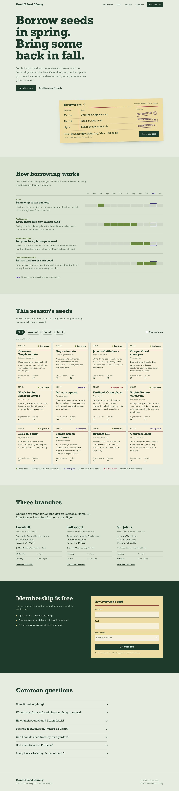
390px
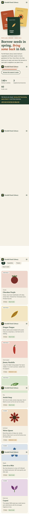
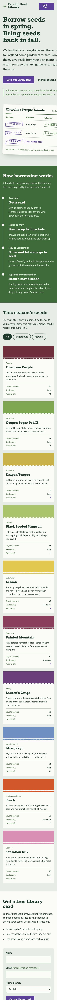
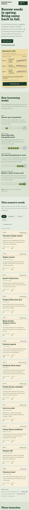
Brief requirements
| No plugin | Anthropic plugins | Fleet plugin | |
|---|---|---|---|
| Explains how borrowing works | ✓ Four step cards (Borrow, Grow, Save, Return) with season ranges and icons, plus a 'Harvest didn't make it? That's fine.' note. All are .reveal elements that sta | ✓ Four-step season timeline (Any time, March to May, May to September, September to November) that runs horizontally on desktop and vertically on phone. | ✓ 'How borrowing works' is a four-row planting calendar with month strips built from data-span and the current month outlined, plus a 'Now: fall returns are open' |
| Shows this season's seeds | ✓ Eight seed cards with tinted illustrated headers, days and save-difficulty tags; All/Vegetables/Flowers/Easy-to-save filters with an empty-state message. | ✓ Ten seed packets with colored swatches and a pinked flap edge, crop type, notes, days, saving difficulty and packets left (low stock in purple); All/Vegetables/ | ✓ Twelve seeds rendered from SEEDS with call numbers, Latin names, days to harvest, packets and a save-difficulty legend; type chips with counts plus an 'Only eas |
| Free membership sign-up with a working form and validation | ✓ novalidate form checks name, email and branch on blur and submit, shows inline errors through data-invalid, focuses the first bad field and swaps to a personali | ✓ novalidate form with name and email checks and specific errors ('That email is missing something...'), focus on first invalid field, then a role=status confirma | ✓ novalidate form with name, email (format check) and required branch, specific inline errors via aria-invalid and aria-describedby, focus on first error, disable |
| Answers common questions | ✓ Seven <details> questions in a two-column FAQ with a contact email. | ✓ Six <details> questions with specific answers (e.g. 20 to 30 seeds, no F1 hybrids). | ✓ Seven <details> questions with concrete answers (failed crops, balcony growing, F1 hybrids). |
| Lists three branches with hours | ✓ Fernhill, Sellwood and St. Johns cards with SVG map art, addresses, full weekly hours, today marked and an open/closed pill (rendered by JS; blank in captures b | ✓ Fernhill, St. Johns and Woodstock with addresses, full Monday-to-Sunday tables, today in bold and a live open/closed status. | ✓ Fernhill, Sellwood and St. Johns with addresses, hours tables, directions links and a live Portland-time 'Closed. Opens tomorrow at 10 am' status. |
| Works at phone width with no sideways scroll | ✓ 390px capture has no sideways scroll; there is a hamburger menu and the grids collapse to one column below 560-640px. | ✗ In the 390px capture the hero lede, the 'See this season's seeds' link and the loan card run off the right edge. The single-column hero grid is widened by the n | ✓ 390px capture shows no clipping; the ledger narrows its columns and the month labels collapse to single letters below 560px. |
| Line length capped for reading text | ✓ Hero lede 34rem and section heads 46rem; the 'Showing 8 of 140+' footnote runs unbounded but is one sentence. | ✓ --measure 36rem on intros, lede 30rem, FAQ answers 38rem, timeline paragraphs 26rem. | ✓ Lede max-width 36rem, section intros 36rem, FAQ 46rem with answers capped at 40rem. |
| Motion is limited to one orchestrated moment or less | ✗ Every section head, step, form and branch card is a .reveal that fades up 16px over 0.6s, and every seed card lifts on hover. In both captures the How, Join and | ✓ Only the new stamp's 'thump' at load, gated by prefers-reduced-motion: no-preference, plus the FAQ plus-sign rotation. | ✓ One 'thump' keyframe on the newest stamp at load; otherwise only a functional spinner and a chevron rotation, all removed under prefers-reduced-motion. |
Measured on the rendered page
| No plugin | Anthropic plugins | Fleet plugin | |
|---|---|---|---|
| Sideways overflow | 1440px: 0px, 390px: 0px | 1440px: 0px, 390px: 52px | 1440px: 0px, 390px: 16px |
| Smallest text | 10.88px, 10.88px | 13.12px, 13.12px | 12px, 11px |
| Light weight under 18px | 0 | 0 | 0 |
| Title Case labels | Amish Snap, Cherokee Purple, Dragon Tongue, Fernhill Seed Library, Jimmy Nardello, Velvet Queen | Black Seeded Simpson, Cherokee Purple, Dragon Tongue, Fernhill Seed Library, Miss Jekyll, Oregon Sugar Pod II | Directions to Fernhill, Directions to Sellwood, Directions to St. Johns, Fernhill Seed Library |
| Uppercase tracked labels / arrows / middle dots | 23 / 0 / 1 | 0 / 0 / 0 | 2 / 0 / 0 |
| Hover rules not gated to hover devices | 7 of 7 | 3 of 3 | 4 of 4 |
| Longest animation | 600ms (2 over 300ms) | 700ms (2 over 300ms) | 700ms (2 over 300ms) |
| ease-in / transition: all / layout props animated | 0 / 1 / none | 0 / 0 / none | 0 / 0 / none |
| Reduced motion / fixed-width digits | yes / yes | yes / no | yes / yes |
| Press scales | none | none | none |
| File size | 50 KB | 29 KB | 43 KB |
Generic AI tells the grader saw
| No plugin | Warm cream background with a high-contrast serif and a terracotta accent, Identical rounded cards with one radius and the same soft gray shadow, Decorative gradient washes or glows, Tracked uppercase eyebrow labels over headings, One accented word in a headline, Metadata joined with middle dots, Fade-up entrance on every section, or hover lift on every card |
|---|---|
| Anthropic plugins | none |
| Fleet plugin | none |
Runs
No plugin
Files read
None
Prompt
Design and build the marketing homepage for Fernhill Seed Library, a non-profit in Portland, Oregon that lends heirloom vegetable and flower seeds to home gardeners each spring and asks them to return seeds saved from their harvest in the fall. Build one self-contained `<workspace>/index.html` (inline CSS and JavaScript, no external dependencies). The page should explain how borrowing works, show some of this season's seeds, invite people to sign up for a free membership, answer common questions, and list the library's three branch locations with their hours. It should work well from a phone to a large desktop screen. Work only inside <workspace>: read and write files there and nowhere else. Don't invoke skills, plugins or slash commands, and don't start servers, browsers or other agents. When you finish, reply with a short summary of what you made, followed by a list of every file you read.
Anthropic plugins
Files read
frontend-design/SKILL.md ux-copy/SKILL.md accessibility-review/SKILL.md design-critique/SKILL.md (first 40 lines)
Prompt
Design and build the marketing homepage for Fernhill Seed Library, a non-profit in Portland, Oregon that lends heirloom vegetable and flower seeds to home gardeners each spring and asks them to return seeds saved from their harvest in the fall. Build one self-contained `<workspace>/index.html` (inline CSS and JavaScript, no external dependencies). The page should explain how borrowing works, show some of this season's seeds, invite people to sign up for a free membership, answer common questions, and list the library's three branch locations with their hours. It should work well from a phone to a large desktop screen. The team's design guidelines are in <workspace>/design-guidelines. Start with design-guidelines/frontend-design/SKILL.md and follow it, reading the other guides it points to, or that apply, as you need them. Work only inside <workspace>: read and write files there and nowhere else. Don't invoke skills, plugins or slash commands, and don't start servers, browsers or other agents. When you finish, reply with a short summary of what you made, followed by a list of every file you read.
Fleet plugin
Files read
skills/design/SKILL.md skills/landing-page-design/SKILL.md references/evidence.md skills/design/references/typography.md skills/design/references/interaction.md skills/design/references/typography/choosing-fonts.md (1-120) skills/design/references/layout.md (1-80)
Prompt
Design and build the marketing homepage for Fernhill Seed Library, a non-profit in Portland, Oregon that lends heirloom vegetable and flower seeds to home gardeners each spring and asks them to return seeds saved from their harvest in the fall. Build one self-contained `<workspace>/index.html` (inline CSS and JavaScript, no external dependencies). The page should explain how borrowing works, show some of this season's seeds, invite people to sign up for a free membership, answer common questions, and list the library's three branch locations with their hours. It should work well from a phone to a large desktop screen. The team's design guidelines are in <workspace>/design-guidelines. Start with design-guidelines/skills/design/SKILL.md and follow it, reading the other guides it points to, or that apply, as you need them. Work only inside <workspace>: read and write files there and nowhere else. Don't invoke skills, plugins or slash commands, and don't start servers, browsers or other agents. When you finish, reply with a short summary of what you made, followed by a list of every file you read.
Grader notes
I judged from the sliced full-page captures at both widths and then from the code for the form, filters, FAQ and branch logic. The phone captures stop at 6752px, so A's and B's lower sections at 390px were judged from code and responsive CSS. A and B share the same concept (a library loan card with rubber stamps and a slab-serif 'Borrow seeds in spring...' headline), but A carries it further: a planting calendar tied to the current month, call numbers, a save-difficulty legend, URL-synced filters with counts and an empty state with reset, and a full loading/error/success path in the form. B is nearly as distinctive and equally restrained in motion, but its hero overflows at 390px, which is a ship blocker for a brief that stresses phones. B also lacks a loading state and names its CTA three ways (Join free / Get a free library card / Get my library card). C is competent and responsive but follows a stock template: cream, serif and terracotta, eyebrows, an italic accent phrase, a stat row, a radial glow, and fade-up on every block. That reveal made most of C's captured page blank, which counted against motion, hierarchy and overall. The sticky header repeating in C's stitched frames is a capture artifact and was not penalized.
Relay: fleet maintenance web app
| No plugin | Anthropic plugins | Fleet plugin | |
|---|---|---|---|
| Grader's rank | 3 | 2 | 1 |
| Overall design quality | 6 | 7 | 8 |
| Distinctive and fitted to this subject, rather than a generic template that could belong to any product | 4 | 8 | 9 |
| Hierarchy and layout | 6 | 7 | 7 |
| Typography | 6 | 6 | 8 |
| Color | 6 | 7 | 8 |
| Interaction and states | 7 | 8 | 9 |
| Motion | 6 | 7 | 7 |
| Copy | 7 | 8 | 8 |
| Platform fit | 7 | 6 | 8 |
No plugin
Strongest: The most careful save model: partial success, failed rows re-selected and flagged 'Not saved', a banner that says what was and wasn't saved, plus a separate history-load error.
Fix first: Fix the bulk action bar so it actually hides (or disables) with no selection; then give the screen a point of view, since it is a stock admin template with green pills on every row that drown the five overdue vehicles.
Anthropic plugins
Strongest: The 40-tile fleet strip makes the key numbers literal: you see the proportion of the fleet down at a glance and click a segment to filter.
Fix first: Make the table fit at 820px (drop or fold Type/Depot, let Next service wrap) so Status isn't clipped, and tighten the next-service cell where date and red 'N days overdue' run together without separation.
Fleet plugin
Strongest: The depot board: every vehicle as a tagged chip grouped by depot, colored and iconed by state, gives a dispatcher the whole fleet at a glance before the table, which is specific to this job.
Fix first: Remove the 'Prototype / Fail the next save / Reload data' bar from the product chrome, and resolve the overlapping counts (33 in service + 7 in shop + overdue + due soon) so the key numbers add up and read as one clear starting point.
1440px
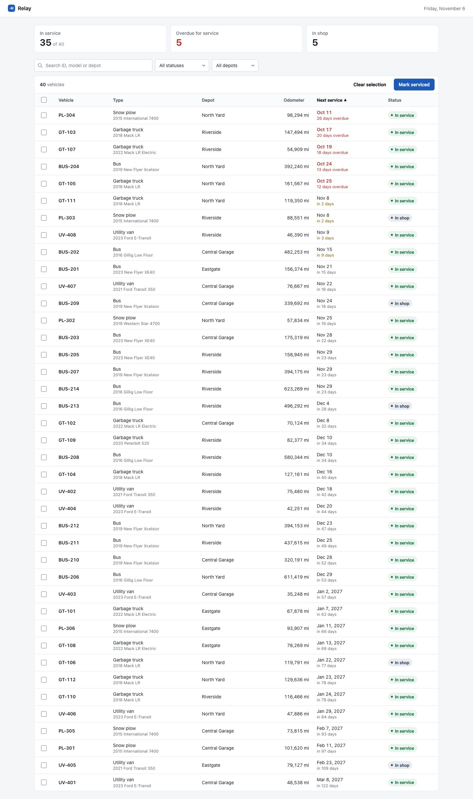
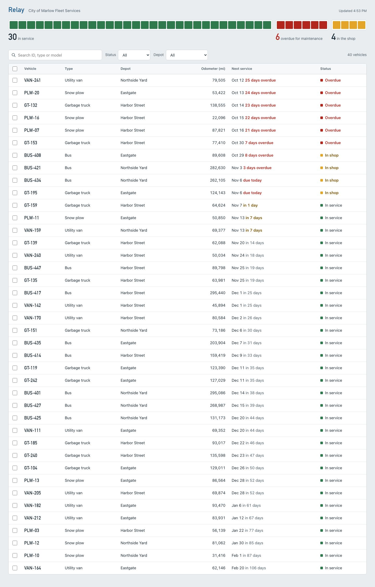
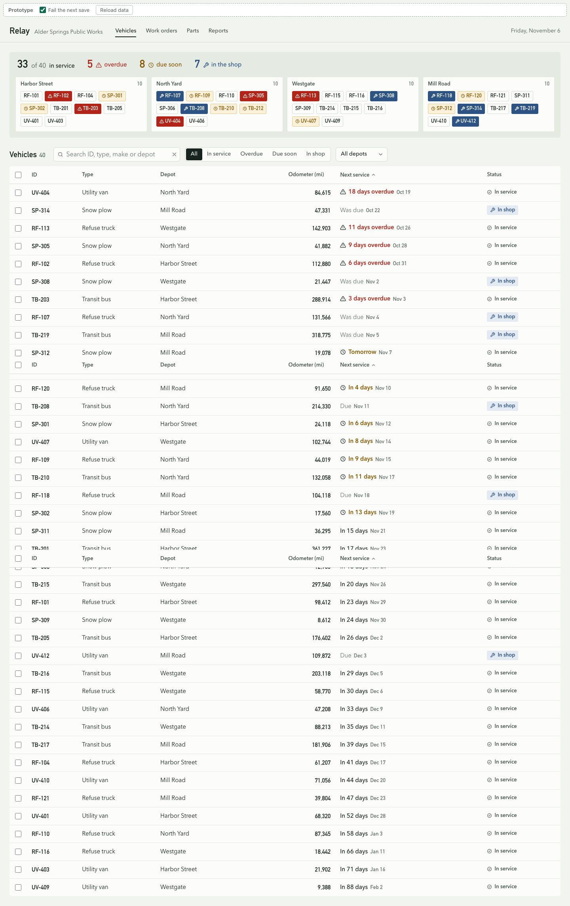
820px
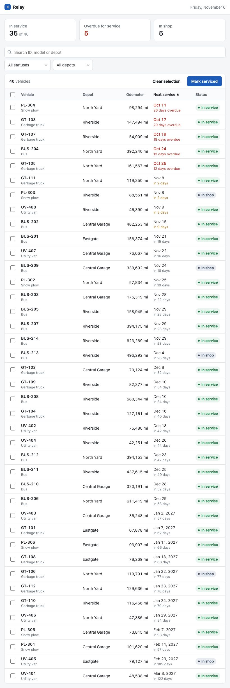
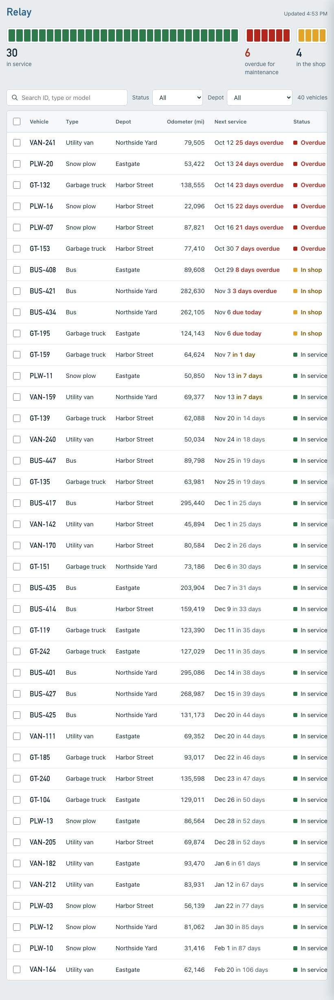
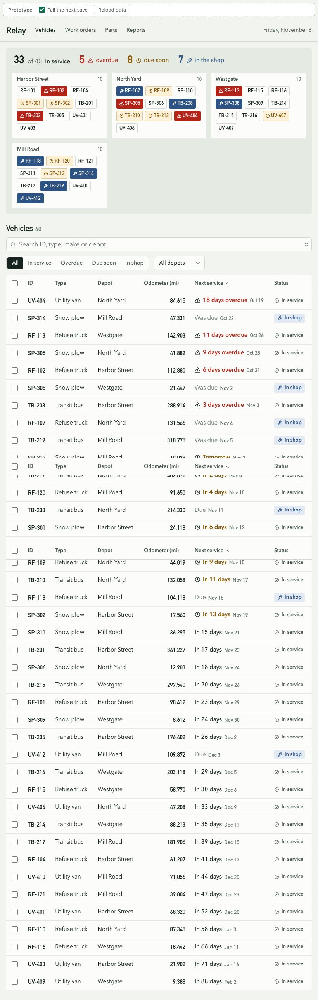
Brief requirements
| No plugin | Anthropic plugins | Fleet plugin | |
|---|---|---|---|
| Key numbers: in service, overdue, in the shop | ✓ Three KPI cards: In service 35 of 40, Overdue for service 5, In shop 5; cards also act as filters (aria-pressed). | ✓ Unit strip of 40 tiles split 30 green / 6 red / 4 amber, labeled '30 in service', '6 overdue for maintenance', '4 in the shop'; segments filter by status. | ✓ Header strip: '33 of 40 in service', '5 overdue', '8 due soon', '7 in the shop' with icons. |
| Vehicle table with ID, type, depot, odometer, next service due and status | ✓ Vehicle, Type (with make/model), Depot, Odometer, Next service, Status at 1440; Type folds under Vehicle at 820. | ✓ Vehicle, Type, Depot, Odometer (mi), Next service, Status. | ✓ Columns ID, Type, Depot, Odometer (mi), Next service, Status in both screenshots. |
| Filter by status and depot plus search | ✓ Search plus All statuses and All depots selects. | ✓ Search, Status select, Depot select, plus clickable strip segments. | ✓ Search input with clear button, segmented status control (All/In service/Overdue/Due soon/In shop) and All depots select. |
| Select rows and mark serviced | ✓ Checkboxes, select-all with indeterminate, save([...state.selected]); but the bulk bar's hidden attribute is overridden by '.card-head .actions {display:flex}', | ✓ Selection bar with 'Mark N as serviced'; markServiced() bulk and from panel. | ✓ Row checkboxes plus select-all; markServiced() bulk action bar with Clear selection and Mark serviced. |
| Side panel with service history on row click | ✓ Row click opens panel with facts, shop note and history; history has its own load error with Try again. | ✓ Grid column panel opens beside the table, overlays below 1180px; shows history via historyHTML(). | ✓ 400px panel docks at >=1200px and slides over with scrim below; renders service log with times and techs. |
| Loading state that matches the final layout | ✓ Skeleton KPI cards and table rows with per-column shimmer bars matching widths and the two-line due cell. | ✓ Skeleton rows with shimmer (disabled under reduced motion), strip segments disabled and 'Loading fleet...' sync text. | ✓ withSkeleton() delays 200ms then holds 400ms; skeleton depot tags and sk-bar rows mirror the real board and table. |
| No-match state with a way to clear filters | ✓ 'No vehicles match' with a sentence naming the query/status/depot and a Clear filters button. | ✓ 'No vehicles match these filters' with Clear filters button. | ✓ Empty row names the query, depot and status ('No vehicles match ...') with a clear action. |
| Save failure explains what failed and offers a retry without losing the selection | ✓ Banner 'Couldn't save GT-103...' explains timeout and that vehicles are unchanged, counts partial saves, Try again; failed ids re-added to selection and rows ma | ✓ 'Couldn't mark N vehicles as serviced. The maintenance server didn't respond, so nothing was saved...' with Try again; selection kept, focus moves to retry. | ✓ Action bar turns to error: 'N vehicles not marked as serviced. Relay couldn't reach the maintenance server...' with Try again; selection kept (only cleared on s |
| Status is not shown by color alone | ✓ Status pills carry text ('In service', 'In shop', 'Not saved'); overdue shown as '26 days overdue' text. | ✓ Status shown as square swatch plus text label (Overdue / In shop / In service); due text '25 days overdue'. | ✓ Status cells and depot tags pair color with icons (warning, clock, wrench) and text like '18 days overdue', 'In shop'. |
| Numbers use fixed-width digits and align in columns | ✓ .num and due dates use tabular-nums; odometer right-aligned with 'mi' suffix. | ✓ Body set to tabular-nums; odometer right-aligned. | ✓ DIN display face with tabular-nums on IDs, odometer, dates; odometer right-aligned. |
| Holds up at tablet width (820px) | ✓ 820px: Type merges under Vehicle ID, filters wrap, all columns visible. | ✗ 820px screenshot: table min-width 720px plus padding pushes Status off the right edge ('In service' clipped), relying on horizontal scroll; KPI labels wrap to t | ✓ 820px screenshot: depot board reflows to 3+1 columns, search goes full width, table keeps all six columns without clipping. |
Measured on the rendered page
| No plugin | Anthropic plugins | Fleet plugin | |
|---|---|---|---|
| Sideways overflow | 1440px: 0px, 820px: 0px | 1440px: 1px, 820px: 0px | 1440px: 0px, 820px: 0px |
| Smallest text | 12.5px, 12.5px | 13px, 13px | 13px, 13px |
| Light weight under 18px | 0 | 0 | 0 |
| Title Case labels | none | none | Harbor Street 10, Mill Road 10, North Yard 10 |
| Uppercase tracked labels / arrows / middle dots | 0 / 0 / 0 | 0 / 0 / 0 | 0 / 0 / 0 |
| Hover rules not gated to hover devices | 9 of 9 | 8 of 8 | 11 of 11 |
| Longest animation | 1400ms (1 over 300ms) | 1600ms (3 over 300ms) | 2000ms (1 over 300ms) |
| ease-in / transition: all / layout props animated | 0 / 0 / none | 0 / 0 / none | 0 / 0 / none |
| Reduced motion / fixed-width digits | yes / yes | yes / yes | yes / yes |
| Press scales | none | none | none |
| File size | 42 KB | 34 KB | 53 KB |
Generic AI tells the grader saw
| No plugin | Identical rounded cards with one radius and the same soft gray shadow, Metadata joined with middle dots |
|---|---|
| Anthropic plugins | none |
| Fleet plugin | none |
Runs
No plugin
Files read
None
Prompt
Design and build the main screen of Relay, a web app a city's fleet maintenance team uses to track its 40 municipal vehicles (garbage trucks, buses, snow plows, utility vans). Build one self-contained `<workspace>/index.html` (inline CSS and JavaScript, no external dependencies) with realistic data. It shows: - A few key numbers at the top: vehicles in service, overdue for maintenance, and in the shop. - A table of vehicles with ID, type, depot, odometer, next service due and status. - Filtering by status and depot, and a search. - Selecting rows and marking them as serviced. - A side panel with a vehicle's service history when a row is clicked. Show what happens while data loads, when the filters match nothing, and when saving fails. It should work on a laptop screen and hold up on a tablet. Work only inside <workspace>: read and write files there and nowhere else. Don't invoke skills, plugins or slash commands, and don't start servers, browsers or other agents. When you finish, reply with a short summary of what you made, followed by a list of every file you read.
Anthropic plugins
Files read
frontend-design/SKILL.md ux-copy/SKILL.md accessibility-review/SKILL.md design-system/SKILL.md design-critique/SKILL.md (first 40 lines)
Prompt
Design and build the main screen of Relay, a web app a city's fleet maintenance team uses to track its 40 municipal vehicles (garbage trucks, buses, snow plows, utility vans). Build one self-contained `<workspace>/index.html` (inline CSS and JavaScript, no external dependencies) with realistic data. It shows: - A few key numbers at the top: vehicles in service, overdue for maintenance, and in the shop. - A table of vehicles with ID, type, depot, odometer, next service due and status. - Filtering by status and depot, and a search. - Selecting rows and marking them as serviced. - A side panel with a vehicle's service history when a row is clicked. Show what happens while data loads, when the filters match nothing, and when saving fails. It should work on a laptop screen and hold up on a tablet. The team's design guidelines are in <workspace>/design-guidelines. Start with design-guidelines/frontend-design/SKILL.md and follow it, reading the other guides it points to, or that apply, as you need them. Work only inside <workspace>: read and write files there and nowhere else. Don't invoke skills, plugins or slash commands, and don't start servers, browsers or other agents. When you finish, reply with a short summary of what you made, followed by a list of every file you read.
Fleet plugin
Files read
skills/design/SKILL.md skills/design/references/layout.md skills/design/references/interaction.md skills/design/references/color.md skills/design/references/typography.md references/craft-floor.md references/evidence.md references/ux-copy.md (part)
Prompt
Design and build the main screen of Relay, a web app a city's fleet maintenance team uses to track its 40 municipal vehicles (garbage trucks, buses, snow plows, utility vans). Build one self-contained `<workspace>/index.html` (inline CSS and JavaScript, no external dependencies) with realistic data. It shows: - A few key numbers at the top: vehicles in service, overdue for maintenance, and in the shop. - A table of vehicles with ID, type, depot, odometer, next service due and status. - Filtering by status and depot, and a search. - Selecting rows and marking them as serviced. - A side panel with a vehicle's service history when a row is clicked. Show what happens while data loads, when the filters match nothing, and when saving fails. It should work on a laptop screen and hold up on a tablet. The team's design guidelines are in <workspace>/design-guidelines. Start with design-guidelines/skills/design/SKILL.md and follow it, reading the other guides it points to, or that apply, as you need them. Work only inside <workspace>: read and write files there and nowhere else. Don't invoke skills, plugins or slash commands, and don't start servers, browsers or other agents. When you finish, reply with a short summary of what you made, followed by a list of every file you read.
Grader notes
Judged screenshots first for hierarchy and fit, then read code for selection, save failure, loading, empty and panel behavior. All three implement every interaction and state; the gap is in craft and specificity. A won on a subject-specific depot board, consistent icon+text status language, a DIN numeral face, and an error that keeps the selection and explains itself; it lost points for the prototype control bar in the chrome and counts that overlap. C has the best single idea (the unit strip) and clean copy, but clips at tablet width and its type is plain system UI. B is solid engineering with the richest failure model (partial saves), but looks like a default admin template, and a CSS bug leaves 'Mark serviced' showing with no selection. A's full-page screenshots repeat the sticky header mid-page; I treated that as a capture artifact, not a design flaw.